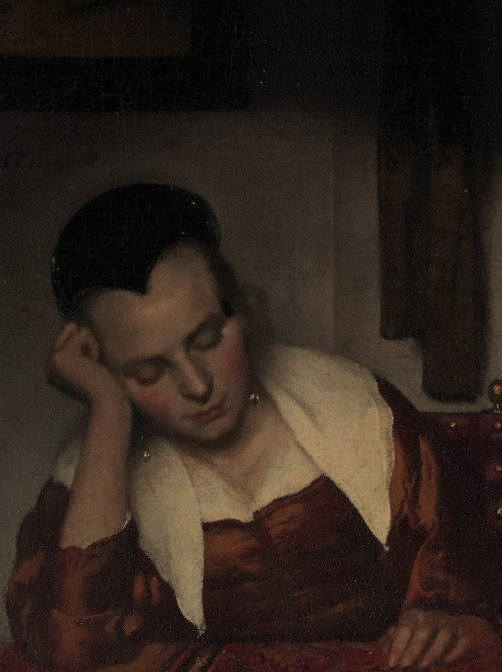
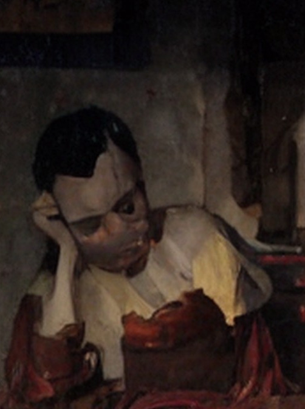
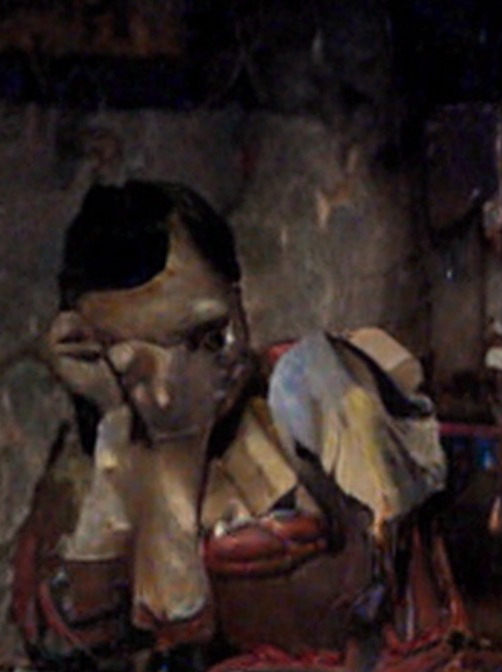
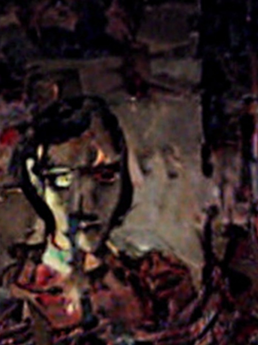
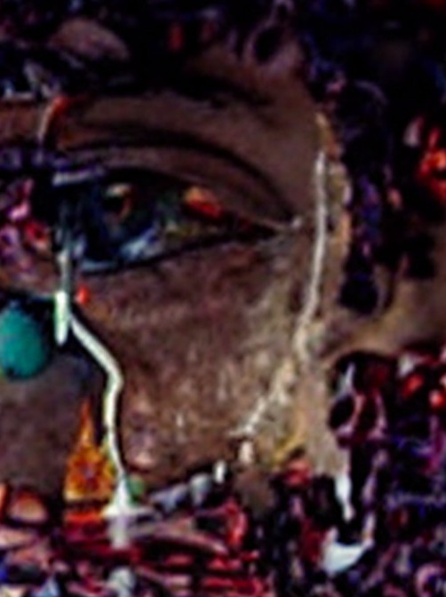

1970 beschrieb der Robotiker Masahiro Mori einen Effekt, den jeder kennt und
kaum jemand erklären kann: Je menschenähnlicher etwas wird, desto sympathischer;
bis kurz vor der Perfektion. Dort kippt es. Fast ein Mensch ist
unerträglicher als offensichtlich keiner.
Unsere Sequenz läuft die Kurve rückwärts: Bild 1 ist noch fast das Original,
Bild 10 ist zerfallen. Irgendwo dazwischen liegt das Tal.
Wie wir das Tal erzeugen

Bild 0Vermeer

Bild 3etwas stimmt nicht

Bild 6deutlich falsch

Bild 8unheimlich

Bild 10zerfallen
Johannes Vermeer, Schlafendes Mädchen (1657);
Ausschnitt aus der tatsächlich erzeugten Sequenz.
Bilder 1–5 · Drift
Stable Diffusion img2img · Stärke 0,10 → 0,30
Jedes Bild entsteht direkt aus dem Original. Ein einziger
Durchgang, fester Startwert; das Gemälde bleibt sich ähnlich und driftet
nur langsam weg.
Bilder 6–10 · Kollaps
Rückgekoppelt · Stärke 0,22 → 0,42
Jetzt wird jede Ausgabe zur nächsten Eingabe. Die Fehler
der KI summieren sich auf sich selbst; echter Modellkollaps. Die
Komposition hält, die Gesichter nicht.
Was wir messen
Während des Originals speichern wir deinen ruhigen Gesichtsausdruck als Grundlinie.
Jedes der zehn Bilder sammelt danach seine eigenen Messwerte.
Das Bild mit der größten Abweichung ist dein Bruchpunkt.
Die Frage, die wir mit deinen Daten beantworten
Auf welcher Stufe der Verzerrung entsteht das Uncanny Valley?
Jeder Durchlauf liefert genau eine Zahl: das Bild, bei dem es gekippt ist.
Sammelt man genug davon, wird aus Einzelreaktionen eine Verteilung;
das Tal bekommt eine Adresse.
Erste Tendenz: Das Tal liegt spät;
die Hälfte aller Bruchpunkte fällt auf die Bilder 6 bis 10, also in die Phase
des Kollapses. Heute Abend wächst dieser Datensatz weiter.